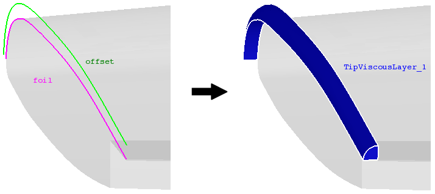

cfdmsh 4.0 documentation
cfdmsh 4.0 documentation cfdmsh 4.0 documentation


Creates a tip viscous layer volume following a foil edge.
First, a quadrangle face is created from the input edges. The normal of this face gives the viscous layer direction. Then, for each position on the input edges, filling edges are created between the foil edge and the offset edge, and between the foil edge and the tip viscous layer top edge. Also, boundary faces are created. Once done, filling faces are created and the foil edge is extruded. All the faces are then put into a compound of which edges are glued. Finally, a shell, and then a solid is created from this compound.
def MakeTipViscousLayer( dist, offset, foil = None, style = "smooth", np = 40, curv = True, tol = 1e-4, by_param = False, rev = False, add = True, infa = False, dim = 3 ):

| Name | Description | Type | GUI selection [?] | Selection by name [?] | Recursive [?] | Default value |
|---|---|---|---|---|---|---|
| dist | The offset distance normal to the wing tip. | Float | - | - | - | - |
| offset | The edge describing the offset of the viscous layer in the wing tip plane. | Edge | - | yes | - | - |
| foil | The edge touching the wing tip. | Edge | yes | yes | - | None |
| style | See here. | String | - | - | - | "smooth" |
| np | See here. | Integer | - | - | - | 40 |
| curv | See here. | Boolean | - | - | - | True |
| tol | See here. | Float | - | - | - | 1e-4 |
| by_param | Defines if the function has to create two points at the same position on the foil edge and on the offset edge respectively by using a same distance from the edge start (True) or the same parameter on the edge (False). In some cases, switch this parameter can give better results. | Boolean | - | - | - | False |
| rev | See here. | Boolean | - | - | - | False |
| add | See here. | Boolean | - | - | - | True |
| infa | See here. | Boolean | - | - | - | False |
| dim | See here. | Integer | - | - | - | 3 |
| dim Value [?] | single Value [?] | Type | Number | Name |
|---|---|---|---|---|
| 1 | - | Compound of Edge | 2 | "TipViscousLayer (Edges)" |
| 2 | - | Compound of Faces | 1 | "TipViscousLayer (Faces)" |
| 3 | - | Solid | 1 | "TipViscousLayer" |
from cfdmsh import * # To adapt to the cfdmsh installation method
vertex1 = geompy.MakeVertex(-50, 200, 0)
vertex2 = geompy.MakeVertex(0, 0, 0)
vertex3 = geompy.MakeVertex(-75, -100, 0)
curve = geompy.MakeInterpol([vertex1, vertex2, vertex3])
offset = MakeEdgeOffset(20, curve, close = False, add = False)
AddToStudy(curve, "curve")
AddToStudy(offset, "offset")
tip_viscous_layer = MakeTipViscousLayer(20, curve, offset)
tip_viscous_layer = MakeTipViscousLayer(20, curve, offset, dim = 1)
The input edges have to be open.
cfdmsh 4.0 documentation
tougeron-cfd.com © 2016